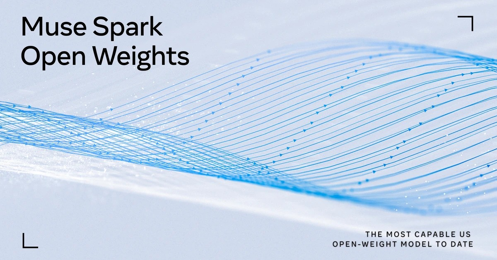
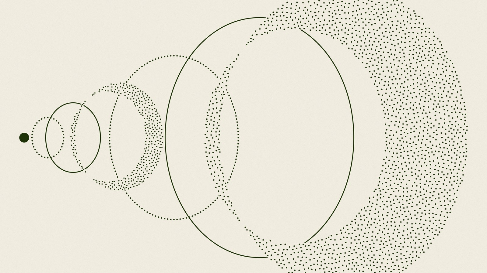
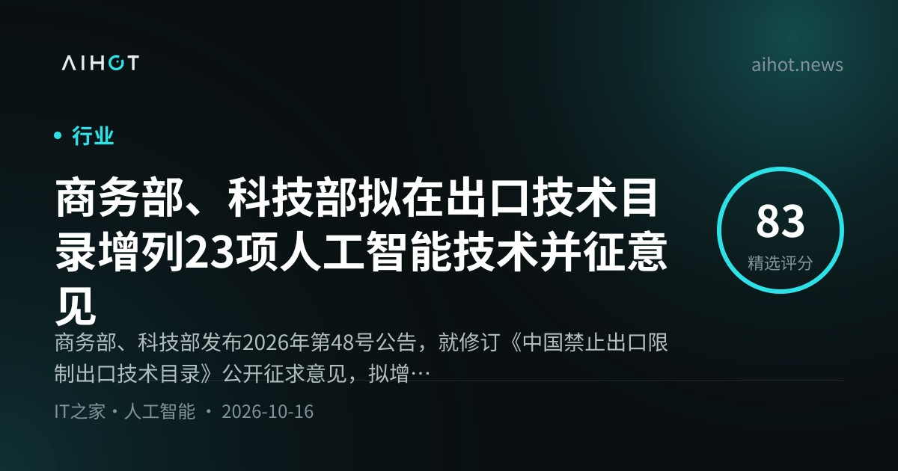
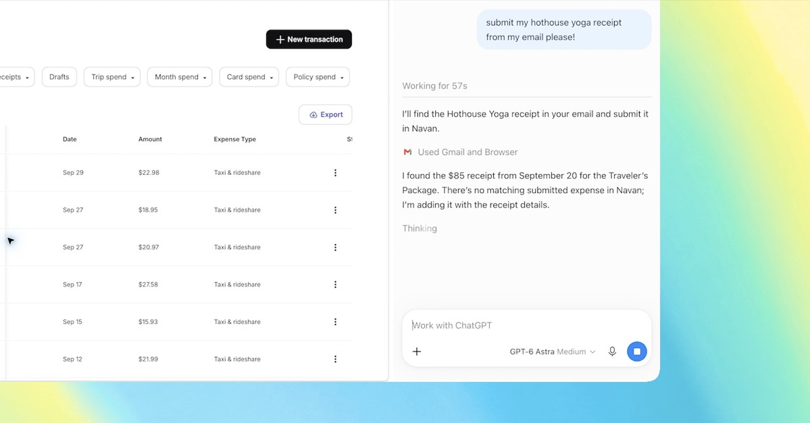
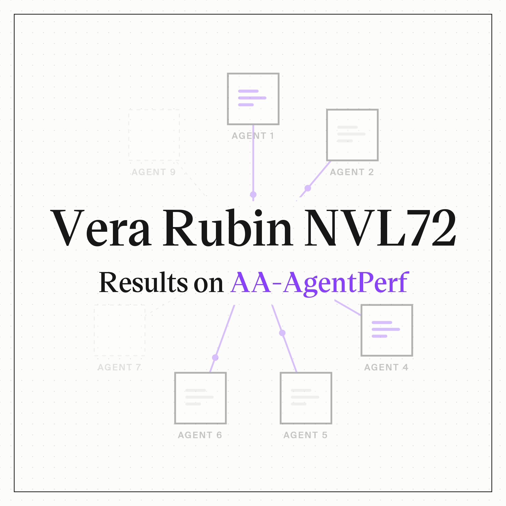

01模型 头条
DeepSeek 放出 V4.1-Flash-1017：多基准抬升、价格不变，并开放自研搜索 API
10-17 16:35 北京时间AIHOT 热榜 #1 · 周末头条独立来源 4 家

DeepSeek API 更新日志社交图（来源：api-docs.deepseek.com）
介绍
10 月 17 日（北京时间下午），DeepSeek 将 V4.1 Flash 升级为 DeepSeek-V4.1-Flash-1017，网页端、APP 与 API 同步；官方称相对上一版是性能–费用的帕累托改进——基准更高、任务更快、输出更短，API 调用方式与价格不变，仍用 deepseek-flash。同日开放自研搜索与抓取 API：底层是「每天处理数亿次」的 AI 原生搜索引擎，索引「全球千亿级网页」，并过滤 SEO 作弊、GEO 操纵与低质 AIGC；官方推文写明每个 endpoint $0.75 / 1,000 次。
为什么重要
Flash 线继续压性价比，同时把自研搜索引擎拆成可计费 API，等于给 RAG / Agent 多了一条不绑第三方搜索的路径。周末热榜把它顶到第一；Arena 在窗口刚结束后的周一凌晨宣布它登顶 Code Arena: WebDev 开源榜，可作为跟进，但不计入本窗口主证据。
要点
- 基准（官方 changelog）：HLE (w/o tools) 42.6（纯文本子集 44.0*）、Terminal-Bench 4.0 42.3、DeepSWE v1.1 77.0、NL2Repo-Bench 68.2、Automation-Bench v1.0.6 60.5、Apex Bench v1.1 72.1 等
- 搜索 API：自研引擎「每天稳定处理数亿次」；推文标价 $0.75 / 千次；文档指向网页搜索与抓取指南
- 生态：官方称特别针对 DeepSeek Harness、腾讯 CodeBuddy、WorkBuddy 等做了优化；建议升级 Harness 0.2.1-rc.1+；Ollama 同日上线
deepseek-v4.1-flash:1017-cloud（美区托管、ZDR） - 窗口外跟进：Arena 于 10-19 02:56（北京）宣布 DeepSeek-V4.1-Flash-20261017 (Max) 为 Code Arena: WebDev 开源第一、总分 1670（#12 overall），称成本约低 10×——发布时间在本周末窗口结束后，仅作热榜上下文
02模型
Meta 开源 Muse Spark Open：816B 总参 / 42B 激活、1M 上下文，主打编码与智能体
10-16 01:08 北京时间AIHOT 10-16 头条独立来源 5 家

Meta AI Research 博文配图（来源：research.meta.ai）
介绍
北京时间 10 月 16 日凌晨，Meta（@AIatMeta）发布开源权重模型 Muse Spark Open：总参数 816B、每 token 激活 42B，上下文 1M，原生多模态（文/图/视频/音频入、文本出），面向编码与长程智能体。权重以 Muse Model License 上架 Hugging Face 等；相对 8 月的 Muse Spark，开源版增加了安全后训练。PyTorch 官方同步转发，称与 Helion 内核、TorchTitan 微调打通。
为什么重要
这是周末美国开源大模型的主事件：规格压到「桌面级双 Mac Studio + MLX」叙事，同时覆盖云端推理伙伴与 vLLM/SGLang Day-0。Arena 同日称其 Max 档为 Code Arena: WebDev 美国开源第一（1511 分）。
要点
- 规格：816B total / 42B active；MoE（256 experts、top-8）；上下文 1M；词汇约 202,048；10 月 15 日美西发布（北京已入 10-16）
- 本地跑法：官方强调两台 Apple M5 Ultra Mac Studio + 最新 MLX 可端侧跑通；Helion 内核在 NVIDIA/AMD 上给出 1.03–3.95× kernel 级加速、AMD MI350 端到端约 +3%
- 分发：HF
meta-models/Muse-Spark-Open-816B-A42B（BF16 约 1.65 TB）与 NVFP4 变体；API 伙伴含 Together、Fireworks、Baseten、Modal、Groq、Nebius、OpenRouter；Ollama Cloud 当日上线 - 榜单：Arena（10-16）称 Muse Spark Open (Max) 为 WebDev 美国开源 #1、开源总榜约 #13，较 Muse Glimmer 高约 156 分
03产业
Anthropic 内部研究：初级技术岗占比下滑，交互式 Agent 工时约为员工六倍
10-16 北京时间AIHOT 热榜 #6 · 论文/产业独立来源 3 家

Anthropic 研究报告页配图（来源：anthropic.com）
介绍
Anthropic 于 10 月 16 日发布技术报告 *How employment is changing at Anthropic*（Wilmers 等）。核心数字：技术部门初级员工占比自 2025 年初 21%→14%，初级新招占比 27%→9%；到 2026 年 8 月，面向员工的交互式 AI Agent 工时合计约为员工工时的 六倍。报告还写：工程师 commit 速度约升至半年前的 5×，销售成交、法务合同处理等非技术产出也随 Agent 扩散上升；招聘经理更强调自主与判断，而非窄域执行技能。
为什么重要
这是前沿实验室第一次用内部雇佣 + Agent 遥测 + 访谈把「初级岗变薄、人变成 Agent 瓶颈」写成可引用的公开报告。它不能外推到全经济，但给「AI 改组织」提供了罕见的硬数据；The Decoder 等媒体在周末跟进解读。
要点
- 用工结构：技术部门初级占比 21%→14%；初级新招 27%→9%；初级空缺岗位份额降至约 6%（媒体转述）；非技术部门相对稳定
- Agent 工时：2026 年 3 月自主+交互 Agent 工时首次超过人类；到 8 月仅统计员工导向的交互式会话，Agent 工时约为员工 6:1；研究部门媒体称可达约 19:1
- 产出：工程师 commit 约 5×（半年对比）；报告用 within-person 固定效应估计编码 Agent 采纳后的产出抬升，并称未发现 Agent 代码回退率显著更差
- 瓶颈：交互式会话中约 80% 墙钟时间在等人类输入；非技术职能阅读 Claude 输出估需半周以上；「元工作」（写 Agent 规格、监控流水线）占比约 10%→22%
04模型
Reflection 首发开源 Beam：501B MoE 上架 Ollama，限时免费且 ZDR
10-16 21:01 北京时间AIHOT 10-17 头条独立来源 5 家

Reflection Beam 发布配图（来源：reflection.ai）
介绍
10 月 16 日，美国新实验室 Reflection 发布首个开源权重模型 Beam：501B 总参 / 23B 激活，文本-in/文本-out，1M 上下文，Apache 2.0。权重含 BF16 / FP8 / NVFP4 与 DFlash2 推测解码草稿模型；官方称与 40+ 伙伴共建推理、微调与 Agent 栈。Ollama 作为 Day-0 合作方，在 Ollama Cloud 上限时免费提供 beam:cloud，并强调全程 零数据保留（ZDR）、美区托管。
为什么重要
继 Meta Muse 之后，周末再添一家美国开源大模型，且许可证更宽松（Apache 2.0）。Artificial Analysis 给 Intelligence Index 30（美国开源第二）、Cyber Index 34%（其所测美国开源第一）；Arena 称其进入 Agent Arena 开源前列。
要点
- 规格：501B / 23B MoE；52 层；1M 上下文；推理档位含 low/medium/high/xhigh/max；自带 Rust harness（Mirror）
- 分发：HF 权重 + Ollama Cloud 限时免费；vLLM / SGLang Day-0；官方称 24 小时内服务约 1 万亿 token 后重置限额（10-18 推文）
- 评测：AA Intelligence Index 30（美国开源 #2）；Cyber Index 34%；Coding Agent Index（Mirror）28；Arena Agent Arena 开源约 #12（Net Improvement -3.67%）、WebDev 开源约 #22（1438 分）
- 注意：账号 @reflectionai 已 suspended，官方现用 @reflection_ai；早期「Introducing」帖在窗口前，本条以 10-16 权重公开为准
05硬件
NVIDIA RTX Spark 笔记本正式开售：起价约 $2,599，128GB 国行版一度被抢空
10-16 北京时间AIHOT 热榜 #8 · 开售/实测独立来源 4 家
NVIDIA Newsroom RTX Spark 配图（来源：nvidianews.nvidia.com）
介绍
10 月 16 日，NVIDIA 宣布 RTX Spark 笔记本正式开售，首发来自 ASUS、Dell、HP、Lenovo、Microsoft、MSI，起价 $2,599。机器把 Blackwell RTX GPU 与 Grace 系 CPU 做成超芯，统一内存最高 128GB，官方宣传最高约 1 PFLOP FP4 AI 算力，主打本地大模型与创作。卡兹克同日实测华硕 ProArt 创 16（128G+1T，京东标价 ¥37,999），称开售时 128G 版本「几分钟被抢空」，并分享本地部署路径。
为什么重要
从发布会叙事进入可买到的本地 Agent 硬件：价格与库存立刻成为话题。本期只收「开售 + 首周实测」角度，不重复更早的发布预告。
要点
- 官宣：ASUS / Dell / HP / Lenovo / Microsoft / MSI；起价 $2,599；最高 128GB 统一内存、约 1 petaflop FP4；Windows 本地 Agent / 创作 / 游戏一体叙事
- 渠道：全球官网与主要零售；Tom's Hardware 等提到 Best Buy 入门约 24GB 配置起、Surface Laptop Ultra 等更高配
- 国内实测：卡兹克称华硕 ProArt 创 16 ¥37,999（128G+1T）开售即抢空；本地 Qwen3.8-27B 约 30 tok/s（其自测，未独立复核）
- 相关：同窗口内 Unsloth 等称可在 Spark 上本地跑/训 120B+；Nemotron 3.5 Bolt 等端侧模型与之捆绑宣传（Nemotron 3.5 Super VL 已在 10-15 简报覆盖，此处不展开）
06政策
商务部、科技部拟增列 23 项 AI 相关出口技术并征意见，同步出口前登记
10-16 北京时间行业动态独立来源 3 家

AIHOT 条目社交图（转述商务部公告）
介绍
10 月 16 日，商务部、科技部发布 2026 年第 48 号公告，就修订《中国禁止出口限制出口技术目录》公开征求意见，并自即日起对附件所列技术实施出口前登记临时管理。拟增列人工智能、生物医药、光伏共 40 项；其中 AI 方向为大模型、智能体、算力集群、信息处理相关 23 项。征求意见期 10 月 16 日–11 月 15 日。公告明确：已通过开源或学术论文进入公共领域的技术不纳入管理。
为什么重要
这是国内对「大模型/智能体/算力」技术出口规则的一次系统立法讨论窗口。发言人答问还区分了海外本地化部署（可能落入管理）与 API/SaaS/端侧轻量部署（多数不属技术出口）等情形，直接影响模型出海合规叙事。
要点
- 规模：三领域共 40 项；AI 23 项；拟禁止出口 14 项、限制出口 26 项（发言人口径，含生物医药与光伏）
- 临时登记：自公告发布至目录正式修订实施，出口经营者须在商务部技术贸易管理信息应用（ecomp.mofcom.gov.cn）登记；含所有权转让、境外授权、实控人变更为境外等
- 开源例外：已开源或论文公开进入公共领域的技术不纳入；境外自建算力中心、联合研发、国际标准等情形适用自动许可等便利（发言人）
- 出海边界（发言人）：限制类大模型的海外本地化部署属管理范围；API 调用、APP/网页、SaaS、本地端侧轻量化部署等多数不属于大模型技术出口管理
07产品
ChatGPT 把 computer use 拉进 Chrome：可读标签页，Work 模式可操控表单与下载
10-16 04:02 北京时间产品更新独立来源 4 家

The Verge 报道配图（截自 OpenAI 演示）
介绍
10 月 15 日晚（北京 10-16 凌晨），@ChatGPT 宣布面向 Chrome 用户的升级：在聊天中可查看已打开标签页并汇总；在 Work 模式下可控制标签页执行发送消息、填表、下载文件，以及整理/分组标签。官方文档（ChatGPT Learn）说明扩展可用于 Chrome / Edge / Brave / Opera / Vivaldi，需在桌面端 Settings → Computer Use 连接扩展；访问新站点默认先询问。
为什么重要
OpenAI 在关掉独立 Atlas 浏览器叙事后，把「用你已经打开的浏览器」做成默认 computer-use 入口。隐私与权限面立刻变大（扩展可读改网页、历史、下载等），媒体与文档都强调按站点授权。
要点
- 能力：Chat 模式读标签汇总；Work 模式操控标签（填表、发消息、下载、分组）；侧边栏可带完整历史与当前页并行
- 覆盖浏览器：Chrome、Edge、Brave、Opera、Vivaldi；侧边栏除 Opera 外均支持
- 权限模型：默认每站点询问；可 Allow once / for this site / for all sites；允许名单与阻止名单在 Computer Use → Manage
- 媒体：The Verge、9to5Google 等同日报道；示例含对比多标签商品、用活动简报填报名表（提交前停下）等
08硬件
Artificial Analysis 首发 Vera Rubin NVL72 AA-AgentPerf：相对 GB300 最高约 5.7×/MW
10-16 09:18 北京时间评测独立来源 4 家

Artificial Analysis 文章封面（来源：artificialanalysis.ai）
介绍
Artificial Analysis 公布面向智能体编码负载的 AA-AgentPerf 首批结果，测试对象是 NVIDIA 下一代机架 Vera Rubin NVL72（72× Rubin GPU + 36× Vera CPU），对比上一代 GB300 NVL72。在 DeepSeek V4 Pro 上，每兆瓦总吞吐相对 GB300 最大约 5.7×（约 190 tok/s/用户 点）；V4.1 Flash 约 5.4×，GLM-5.2 约 3.0×，Kimi K3 约 2.8×。峰值吞吐点领先收窄到约 1.14–1.45×。
为什么重要
这是把「机架级推理效率」绑到真实 Agent 轨迹（长上下文、工具调用停顿、约 97% 前缀重复）上的新基准，比纯 chat 吞吐更能说明下一代超节点值不值。对要规划 Agent 推理集群的人，数字可直接对照 GB300。
要点
- 最大领先（每 MW）：V4 Pro ~5.7× @ ~190 tok/s/user；V4.1 Flash ~5.4× @ ~580；GLM-5.2 ~3.0×；Kimi K3 ~2.8×（截至 10-15 结果页）
- 峰值吞吐点：V4 Pro 272M vs 239M tok/s/MW（1.14×）；Flash 571M vs 395M（1.45×）
- 负载特征：请求最长约 132K 输入；轨迹可超百轮；平均 97% token 为上一请求重复前缀——KV cache 命中成关键
- 单节点尖峰：AA 称 DeepSeek V4.1 Flash 在单台 4-GPU 服务器上可达约 906 tok/s/用户，为其榜单该模型最快纪录
阶跃星辰开放 Step 5 Preview 权重10-16BF16/FP8 上架 Hugging Face 与 ModelScope，并附技术博客；FeatherlessAI 等跟进部署
Anthropic 向 METR 提供类员工访问权限10-16 01:27六名评估人员获硬件、办公与内部系统访问；METR 可公开发布风险评估，Anthropic 不得否决，仅可要求删减少数预定义类别
ClaudeDevs：Claude 编写了约 90% 的 Claude Code 代码10-16称 6–9 月合并 PR 翻倍以上、回退比例下降超 40%；配套介绍代码评审改造（claude.dev 博客）
Waymo 宣布进军多伦多，目标 2028 年接客10-16先人工驾驶采集地图；与 Element Fleet 合作车队管理；官方称基于超 4 亿公里全自动驾驶里程，严重伤害及以上事故比人类少 95%
ARC Prize：Gemini 4 Argon 在 ARC-AGI-3 获 97.5%（Verified）10-16 00:22快讯口径；细节以 ARC Prize 原帖为准
Perplexity 开源驱动 Perplexity Computer 的沙箱平台 SPACE10-16 01:32Aravind Srinivas 宣布；面向 Computer 产品的沙箱基建开源
Microsoft AI 公布 MAI-Base-2 预训练细节10-16 00:09称 2.8T 参数 MoE，FLOPs 效率达 DeepSeek-V4-Pro-Base 的 4.2–12.3×（官方博客口径）
蚂蚁百灵开源 Ling-3.1-flash10-15 08:00560B 参数模型，称可 4 卡部署
德国法院判例：Google 须为 AI Overview 内容担责10-18The Decoder（10-18）综述慕尼黑等地方法院逻辑；Google 曾宣布上诉后以和解结案。部分案情时间在窗口前，媒体综述在窗口内
Claude Opus 5.5 fast mode 结束研究预览、移除等待名单10-16 04:09Claude Devs 宣布
AIHOT 日报 10-16 / 10-17 / 10-18 / 10-19 + 热榜 + 7 日精选读到
四期日报与热榜、7 日精选均已读；10-19 期中窗口外条目（Arena DeepSeek 登顶、公益基金等）只作热榜/跟进标注
X 公开数据（官方账号原推 / 搜索）读到
DeepSeek、AIatMeta、PyTorch、ChatGPT、ollama、reflection_ai、ArtificialAnlys、arena、nvidia/NVIDIARTXSpark、AnthropicAI、Khazix0918 等；Anthropic 雇佣报告未见官方 X 主帖
你在 10/16–10/18 发的推文（@HhhharryRen）读到 · 没更新
接口正常返回，窗口内 0 条
WaytoAGI 飞书知识库没读到
WebFetch 遇 302，本环境无浏览器子代理，未展开 SPA；waytoagi 字段留空
官方页面核对读到
api-docs.deepseek.com、research.meta.ai、anthropic.com/research/employment-at-anthropic、ollama.com/blog/reflection-beam、reflection.ai、nvidianews.nvidia.com、mofcom.gov.cn 第 48 号与答记者问、artificialanalysis.ai、learn.chatgpt.com
媒体交叉（WebSearch / 抓取）读到
The Decoder、The Verge、9to5Google、IT之家、Tom's Hardware、The Model Press、Hugging Face blog 等
Nemotron 3.5 / Kling 4.0 / FLUX 3 / Anthropic Q3 / 八州诉 OpenAI 等没更新
已在 10-14/10-15 简报覆盖，本周末不重复作主线